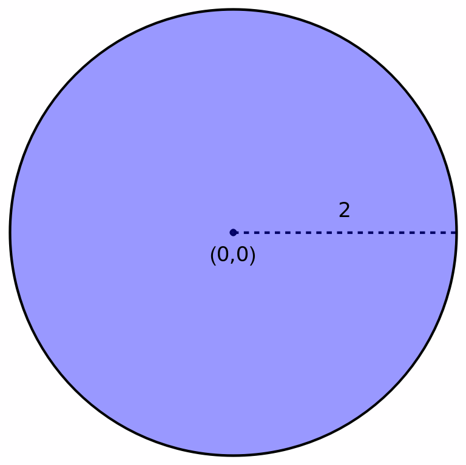
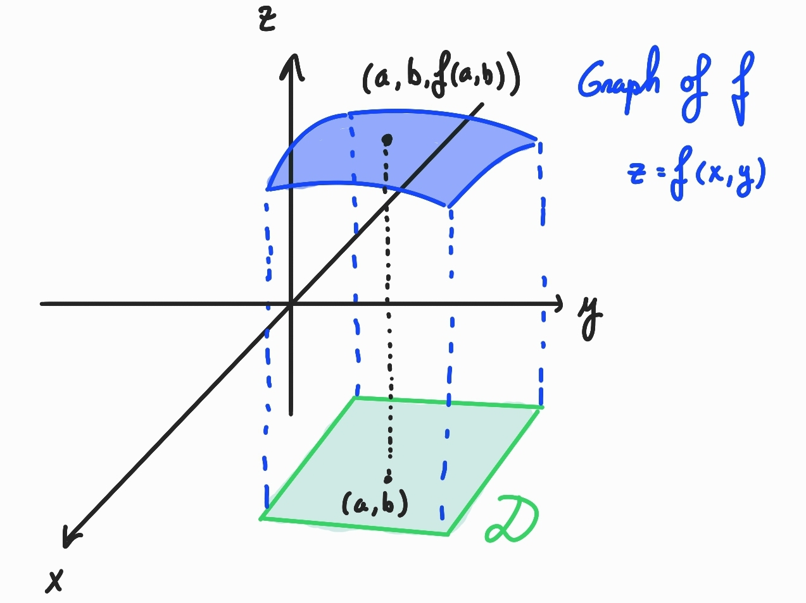
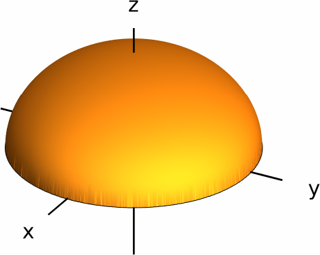
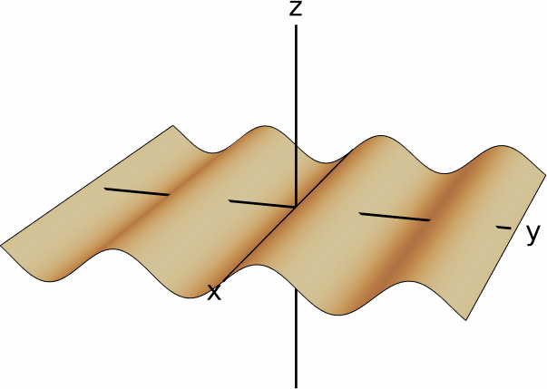
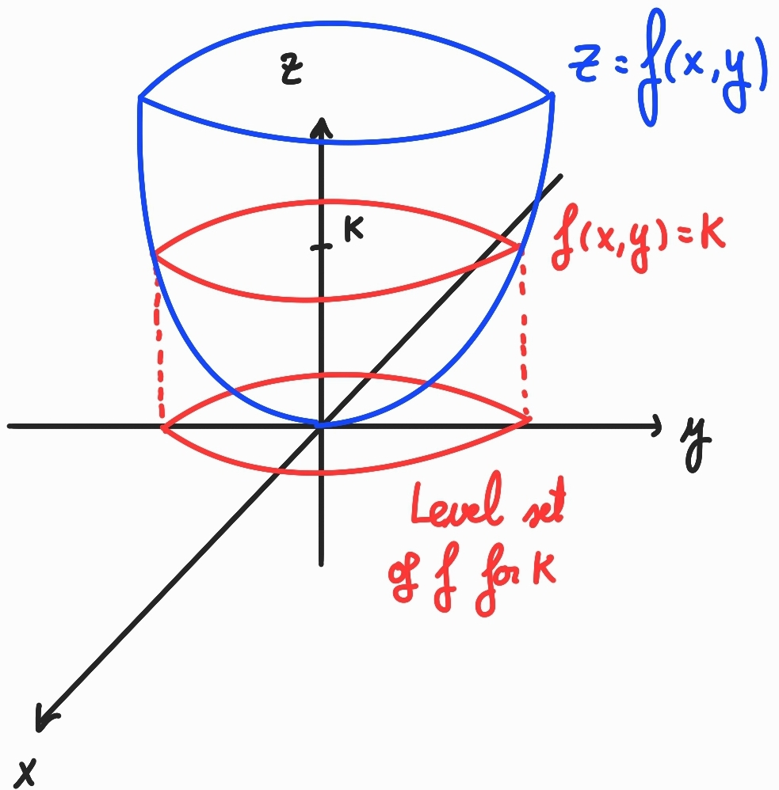
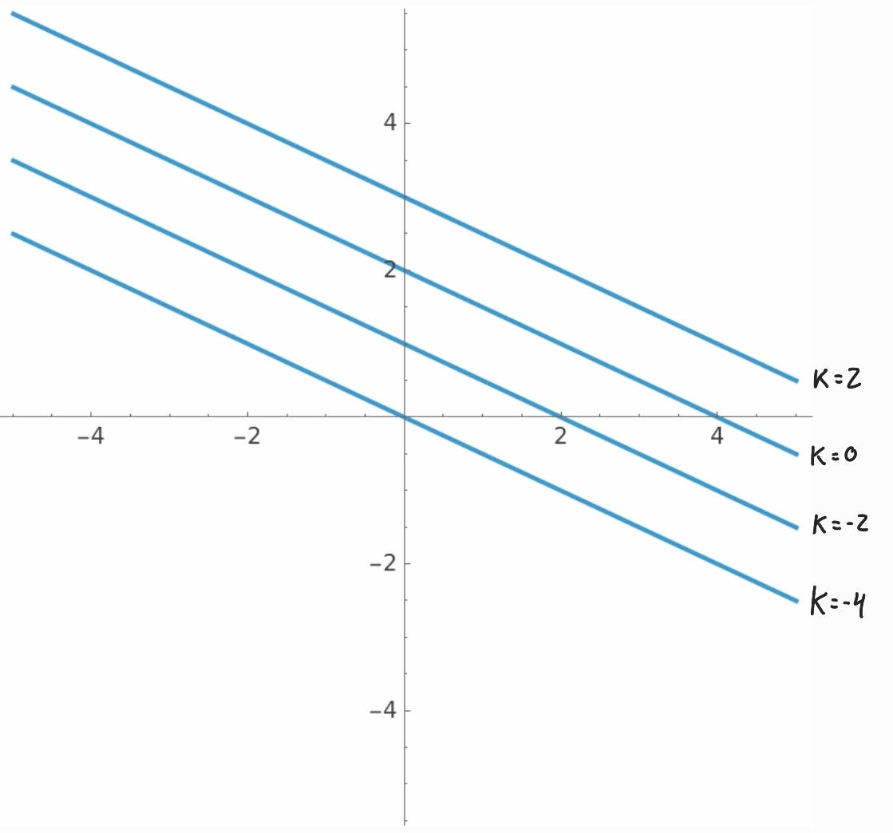
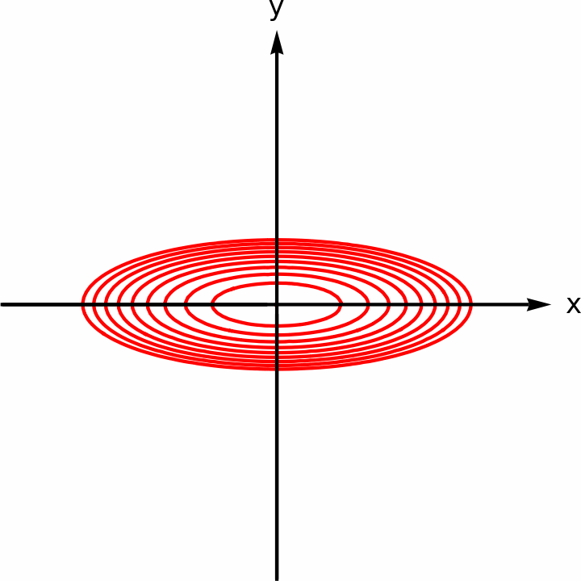
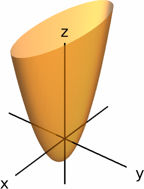

Partial Derivatives
In this chapter we introduce functions of several variables. In previous Calculus courses, we have worked with functions that depend on a single variable.
To be more precise, we already know how to work with a function of the form $y=f(x)$. The function $f$ establishes a relationship in which the value of the variable $x$ (the independent variable) completely determines the value of the variable $y$ (the dependent variable). The main focus of this course will be to deal with functions that depend on more than one independent variable. For instance, the function $z=x+y$ gives a relationship in which the values of the variables $x$ and $y$ determine the value of the variable $z$.
In this course, we will extend all of the techniques that we know from single variable calculus to the case of several variables. Most importantly, we will learn how to take (partial) derivatives and integrals of functions of several variables.
Functions of Several Variables
For the purposes of this course, we will mostly work with functions of two variables (that is, $z=f(x,y)$), as well as with functions of three variables (that is, $u=f(x,y,z)$).
We also make the following definitions:
- The set $D$ is called the domain of $f$. We also denote the domain of $f$ by $\dom (f)$.
- The range of $f$ is the set of all the values that $f$ takes on $D$. More explicitly, the range of $f$ is \[\{f(x_1,\dots,x_n)\mid (x_1,\dots,x_n)\in D\}.\]
- The variables $x_1,\,\dots,\,\,x_n$ are the independent variables. In addition, if we write $z=f(x_1,\dots,x_n)$, then $z$ is the dependent variable.
In the case that we are given a function $f(x_1,\dots,x_n)$ in terms of its formula, without specifying its domain, then we will understand that the domain of $f$ is the set of all $n$-tuples $(x_1,\dots,x_n)$ for which the expression $f(x_1,\dots,x_n)$ is defined.
- $f(x,y)=\frac{\sqrt{2x-y+6}}{2x-4}$.
- $g(x,y)=e^x\ln(x-y^3)$.
Solution.
We start with $f$. We have that \[ f(1,-1)=\frac{\sqrt{2+1+6}}{-2-4}=\frac{3}{-6}=-\frac12. \] Now, to compute the domain of $f$ we need to understand when the fraction \[ \frac{\sqrt{2x-y+6}}{2x-4} \] is defined. This happens precisely when the denominator $2x-4$ is different from zero (which amounts to $x\neq 2$) and the inside of the square root ($2x-y+6$) is nonnegative (that is, $y\leq 2x+6$). Therefore, the domain of $f$ is \[ \dom(f)=\big\{(x,y)\in\RR^2\mid x\neq 2,\,y\leq 2x+6\big\}. \]
We now deal with the function $g$. Firstly, \[ g(1,-1)=e\ln(1+3)=e\ln(4). \] To find $\dom(g)$, we need to know when the formula $e^x\ln(x-y^3)$ is defined. Because the natural logarithm is defined only on positive numbers, we see that $g(x,y)$ exists precisely when $x-y^3>0$, so the domain of $g$ is \[ \dom(g)=\big\{(x,y)\in\RR^2\mid x>y^3\big\}. \]
Solution.
To compute $\dom(f)$, we need to see when the expression $\sqrt{4-x^2-y^2}$ is defined. This happens precisely when the argument inside the square root is greater than or equal to zero. Therefore, the domain of $f$ is \[ \dom(f)=\{(x,y)\in\RR^2\mid x^2+y^2\leq 4\}. \] This is a closed disk centered around the origin and with radius $2$.

The range of $f$ is \[ \{z\mid z=\sqrt{4-x^2-y^2}\}. \] Since $z$ is a square root, we have $z\geq 0$. In addition, observe that $z=\sqrt{4-x^2-y^2}\leq \sqrt{4}=2$, which means that the range of $f$ is a subset of the interval $[0,2]$. In fact, the range of $f$ is precisely the interval $[0,2]$, because (for instance) the points $(t,0)$ with $0\leq t\leq 2$ lie in the domain of $f$ and satisfy $f(t,0)=\sqrt{4-t^2}$. As $t$ goes from $0$ to $2$, we see that $f(t,0)$ goes from $2$ to $0$, so every number inside $[0,2]$ falls in the range of $f$.
Graphs
Recall that for a single variable function $y=f(x)$, we could sketch its graph, which is the set of all points of the form $(x,f(x))$ (where $x$ lies in the domain of $f$). For functions of several variables, we can also define their graph:

Solution.
The graph of $f$ is the set of solutions to the equation \[z=x^2+y^2,\] which is precisely a paraboloid.

A particular class of functions with relatively easy graphs are linear functions. We say that a function $f(x_1,\dots,x_n)$ is linear if it is of the form \[ f(x_1,\dots,x_n)=a_1 x_1+\cdots+a_n x_n+c, \] for some constants $a_1,\,\dots,\,a_n,\,c$.
For instance, if $f(x,y)=ax+by+c$ is a linear function of two variables, then its graph is a plane in three-dimensional space.
Solution.
To get an idea on what the graph of $f$ looks like, we are going to take a look at the cross-sections of this graph with the planes $x=0$ and $y=0$.
Firstly, the cross-section of the graph with the plane $x=0$ is the set of solutions to the system of equations \[ x=0,\qquad z=x-2y=-2y. \] Thus, this cross-section is just the line $z=-2y$ in the $yz$-plane.
Secondly, the cross-section of the graph with the plane $y=0$ is given by the system of equations \[ y=0,\qquad z=x-2y=x, \] so this is simply the line $z=x$ in the $xz$-plane.
In conclusion, the graph of $f$ is precisely the only plane that contains the two lines above, so its graph looks as follows:

Solution.
The graph of $f$ is the set of solutions to the equation \[ z=\sqrt{4-x^2-y^2}. \] If we square both sides, we obtain \[ z^2=4-x^2-y^2\implies x^2+y^2+z^2=4. \] This is the equation of the sphere centered around the origin with radius $2$. However, note that the points $(x,y,z)$ in this graph must have $z\geq 0$, since $z$ is a square root. Therefore, the graph of $f$ is actually the top half of the sphere centered around the origin and of radius $2$:

Solution.
The graph of $g$ is the set of all solutions $(x,y,z)$ to the equation $z=\sin y$. Note that the variable $x$ does not appear in that equation, which means that if we consider the cross-section of the surface $z=\sin y$ with any plane of the form $x=k$ (where $k$ is a constant), then this cross-section is always the curve $z=\sin y$.

Level Sets and Contour Maps
While it is possible to sketch the graph of a function $z=f(x,y)$ that depends on two variables, we cannot sketch the graph of a function of three variables because it is a subset of a four-dimensional space. However, there is an alternative way to visualize functions that will also allow us to interpret functions of three variables graphically:

Solution.
If $k$ is any number, then the level curve of $f(x,y)$ corresponding to $k$ is the set of solutions to the equation \[ x+2y-4=k. \] Solving for $y$, we obtain \[ y=-\frac{1}{2}x+\frac{k}{2}+2. \] This means that the level curves of $f$ are straight lines with slope $-\tfrac12$ and $y$-intercept $\tfrac{k}{2}+2$. By setting $k$ to be $-4$, $-2$, $0$ and $2$ respectively, we obtain that the level sets are the lines \[ y=-\frac12 x,\quad y=-\frac12 x+1,\quad y=-\frac12 x+2,\quad y=-\frac12 x+3, \] respectively.

Solution.
For each number $k$, the corresponding level curve of $f$ is given by the equation \[ x^2+9y^2-1=k\iff x^2+9y^2=k+1\iff \Bigg(\frac{x}{\sqrt{k+1}}\Bigg)^2 + \Bigg(\frac{3y}{\sqrt{k+1}}\Bigg)^2 =1. \] This means that the level curves of $f$ are:
- Empty if $k+1< 0$ (that is, if $k < -1$)
- The single point $(0,0)$ if $k+1=0$ (that is, if $k=-1$).
- The ellipse centered at $(0,0)$ with semiaxes $\sqrt{k+1}$ and $\tfrac{1}{3}\sqrt{k+1}$ if $k+1>0$ (that is, if $k>-1$)

